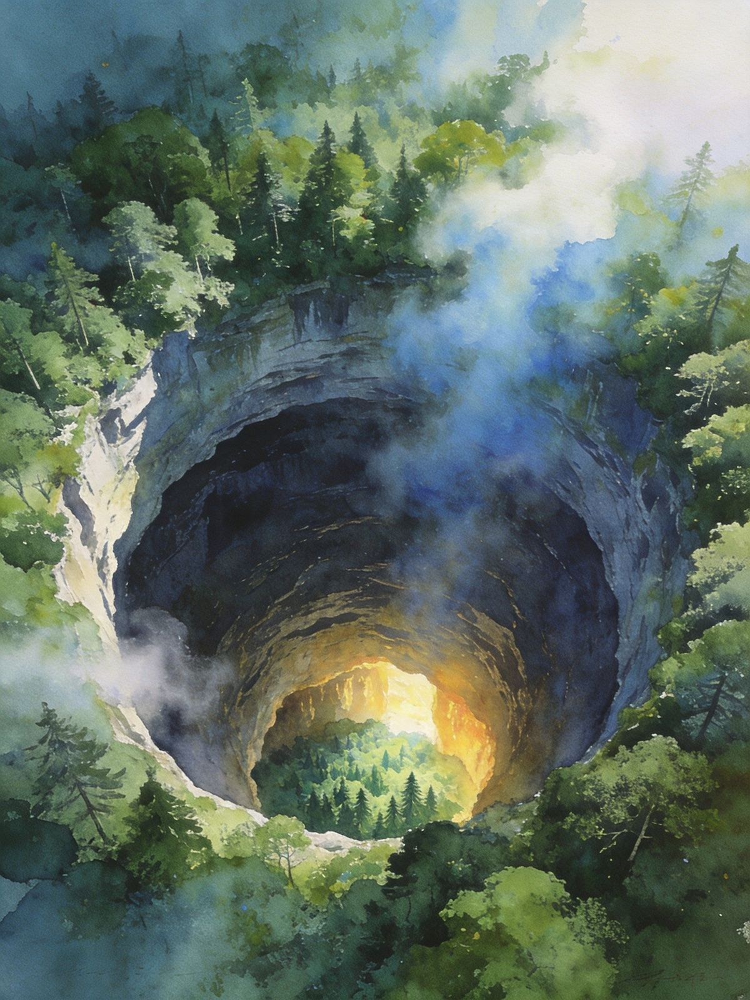
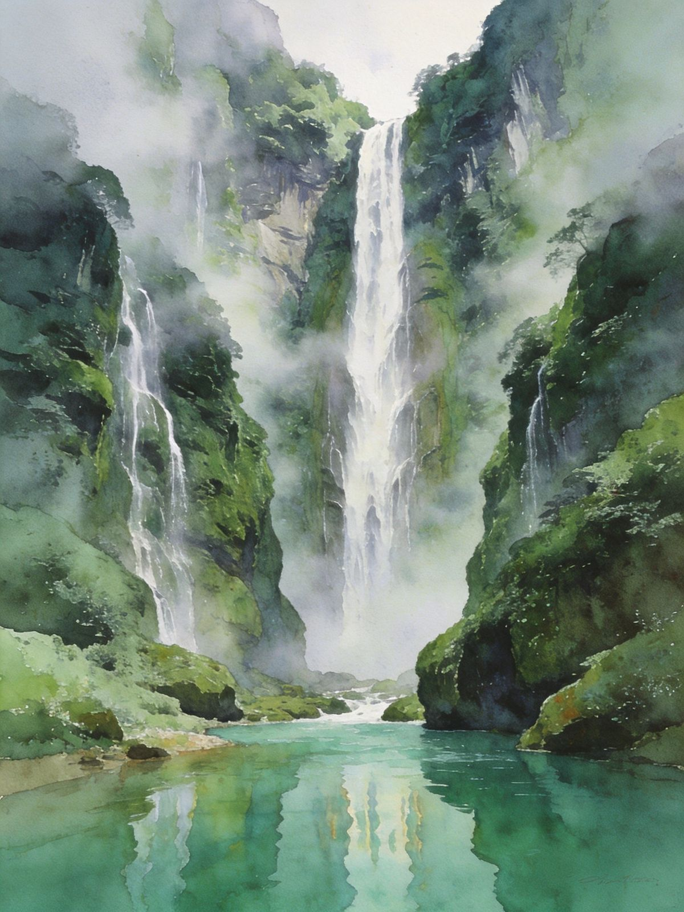
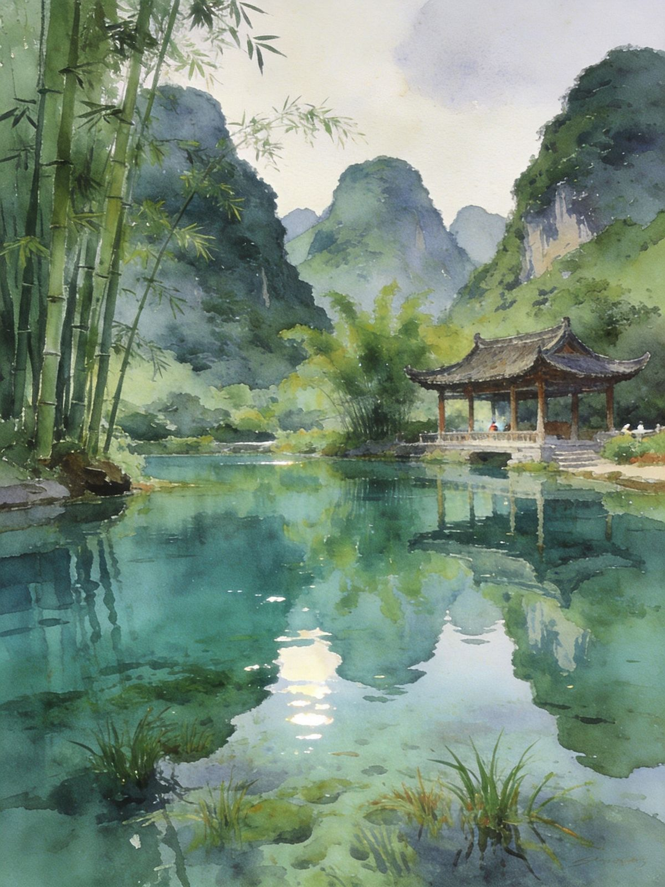

封面
总览
行前·交通·住
乐业天坑 · Day1
靖西秘境 · Day2
鹅泉·返程 · Day3
乐业天坑
靖西秘境
百色美食
避坑提示

BAISE · GEOLOGICAL MIRACLE
百色·天坑秘境
乐业天坑群 · 靖西秘境 · 通灵大峡谷
地质奇观
大石围天坑
通灵大峡谷
靖西鹅泉
桂西秘境
广西 · 百色
A5 口袋手册
· 2-3天
1
/ 10
百色·天坑秘境
动线总览
2–3 天怎么玩
Route Overview
2天
精华
乐业大石围天坑群
世界级天坑，云海观景
3天
深度
+ 靖西通灵大峡谷 + 鹅泉
秘境山水，世外桃源
TIP
百色地处桂西，拥有
世界级喀斯特地质奇观
——乐业大石围天坑群，以及
靖西鹅泉、旧州、通灵大峡谷
等秘境山水。人少景美、地质震撼，是
逆风小众游
的宝藏方向。
TIP
天坑与峡谷多在山地，
景点分散且相距远
，强烈建议
自驾/包车
；盘山弯多，雨天路滑需谨慎。
2
/ 10
百色·天坑秘境
行前准备
出发前，记住
3 件事
Before You Go
🚄 怎么去
高铁
：百色站（南宁/昆明间），市区交通便利
乐业
：百色→乐业约160km，自驾约2.5-3h
靖西
：百色→靖西约110km，自驾约2h
📅 最佳季节
春秋（3–5 / 9–11月）
气候宜人，云海时见
夏季
多雨，峡谷水量大更壮观；避开暴雨
🏨 住哪
近天坑群选
乐业县城
游鹅泉/旧州/通灵选
靖西市区
TIP
天坑/峡谷都在山地，
自驾或包车最稳
；车程长，备水粮，加油站按计划加。
3
/ 10
百色·天坑秘境
Day1 · 乐业天坑
Day1 · 全天
世界级天坑 · 云海翻涌
白崇高速赴乐业
→
大石围天坑主景区
→
云海亭
→
住乐业县城
🌋 大石围天坑群
大石围天坑
深度600米级、口径900米级
天坑观景台、日落峰、云海亭
看云海
⛰ 进阶玩法
穿洞天坑
可步行入内（部分需预约/向导）
坑底原始森林与暗河
⚠ 安全
坑口边缘注意
看护围栏
，勿翻越；坑底探洞需
专业向导装备
，勿自行深入。
4
/ 10
百色·天坑秘境
Day2 · 靖西秘境
Day2 · 秘境
通灵大峡谷 · 鹅泉 · 旧州
驱车靖西
→
通灵大峡谷
→
鹅泉/旧州古镇
💧 通灵大峡谷
幽深峡谷 + 落差近
190米的通灵大瀑布
翠谷清潭，夏季水量足最壮观
🏞 鹅泉·旧州
鹅泉
清澈泉水潭，泉眼奇观+古亭倒影
旧州古镇
壮族古镇，
绣球之乡
TIP
玉溪峡谷
夏季水量足
，瀑布最壮观；穿防滑鞋，路段湿滑。

通灵瀑布

靖西鹅泉
5
/ 10
百色·天坑秘境
Day3 · 鹅泉·返程
3日 · 深度
鹅泉晨景 · 德天顺访
鹅泉晨景
→
德天瀑布顺访
→
下午返程
🌄 鹅泉晨景
清晨光线洒在
泉水与古亭
上，世外桃源感
泉眼奇观，走近水面清澈见底
🗺 顺访/返程
可视路线
德天瀑布
顺访（若与靖西同线）
下午驱车返百色/南宁
TIP
靖西到
德天
若同线可顺访跨国瀑布；不赶路则留
鹅泉晨景
慢慢拍。
6
/ 10
百色·天坑秘境
乐业天坑
大石围天坑群
· 世界地质奇观
Tiandi Wonders
🌋 主坑看点
大石围天坑
深度600米级、口径900米级
坑底有
原始森林与暗河
，坑口常年云雾缭绕
天坑观景台、日落峰、云海亭
看云海翻涌
⛰ 进阶
穿洞天坑
可步行入内（部分需预约/向导）
白洞天坑
等可组合游览
⚠ 安全
坑口注意
看护围栏
，勿翻越；探洞需
专业向导
，勿自行深入。
天坑云海
7
/ 10
百色·天坑秘境
靖西秘境
靖西秘境
· 山青水秀
Jingxi Gems
💧 通灵大峡谷
幽深峡谷 +
落差近190米大瀑布
翠谷清潭，夏季水量足最壮观
🏞 鹅泉 · 旧州
鹅泉
清澈泉水，泉眼+古亭倒影
旧州古镇
壮族古镇、
绣球之乡
TIP
鹅泉与旧州相去不远，可
同游
；峡谷湿滑
穿防滑鞋
。
靖西鹅泉
通灵大瀑布
8
/ 10
百色·天坑秘境
百色美食
桂西风味
· 山珍与壮族
Eat · Local
TIP
隆林黑山羊火锅
是百色名菜，鲜香滋补；县城餐馆性价比高。
🍲
隆林黑山羊火锅
百色名菜，鲜香滋补
🍚
五色糯米饭、蕉叶糍
壮族风味
🥢
酸嘢、卷筒粉、米粉
街头小吃
🥭
百色芒果、八角
当地名产
🥘
山地农家菜
竹笋、山菌、走地鸡
TIP
点
当地菜更地道
；山地食材新鲜，走地鸡与山菌值得一试。
9
/ 10
百色·天坑秘境
避坑提示
看清这些，玩得更安心
Stay Safe
📍
景点分散
别指望一天逛大石围+通灵
🥾
山地防滑
穿防滑鞋，暴雨勿登山探洞
🚗
盘山弯多
新手/雨天谨慎驾驶
⛽
车程长
备水粮，加油站按计划加
🎟
提前预约
提前查天坑开放与探洞预约
⚠️
紧急
紧急拨 110 / 120；消费纠纷拨 12345
百色秘境「WorldStip」祝你玩得开心 🌋
10
/ 10
WorldStip · 百色 · 乐业大石围 / 靖西鹅泉 / 通灵大峡谷 / 旧州古镇 · 数据以景区当日公示为准
Insta360
记录美好
记录美好生活
相机指南 · CAMERA GUIDE